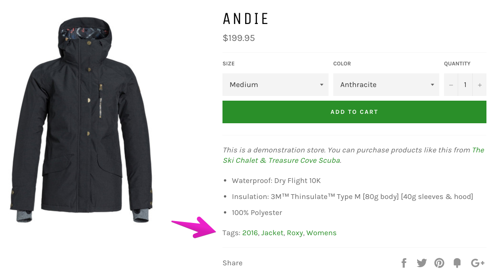
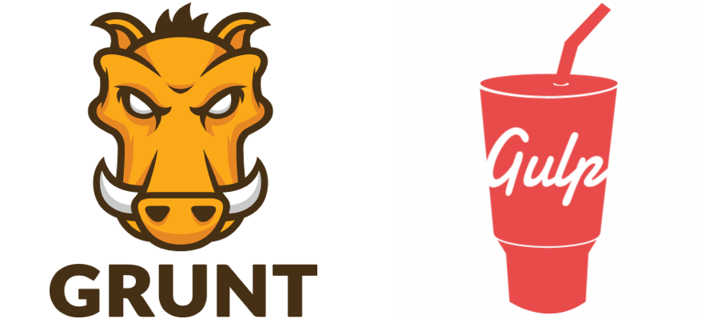

Development playground
You need a space that's going to let you build, test and iterate.
Make launching the final product easy.
- Head to shopify.ca/partners
- Create an account
- Have access forever
Shopify Partners Program
50% playground, 50% business.
- Create new stores for clients
- Develop new apps for the App Store
- Design new themes for the Theme Store
- Access to a variety of resources
- Hand off development stores to merchants
- Review collected and incoming payments
Development store

Create a development store with at least the "online store" channel enabled.

Import products
- Click on Products in the sidebar
- Import products to do a bulk upload
- Upload
products.csvlocated in this presentation folder
Collections
Make a "smart" collection called Snowboard.
Collections
Make a few more collections:
- Jackets for products with the type equal to "Jackets".
- Accessories for any product tags you feel is appropriate.
- Bindings for products that contains the word "Bindings".
- A collection with the product vendor of your choice.

Install and publish a free theme called Venture.

Storefront editor
Using the storefront editor, make the following customizations:
- Upload a slide image from the
images/directory in the presentation folder. - Set at least three "featured collections" on the homepage.
- Set at least one "featured products" collection on the homepage and change the number of rows displayed.
- On collection pages, display the product vendor.
- On product pages, display all the product's tags.

Liquid
A templating language that will output information into your theme's template files.
// Liquid
<h1>{{ product.title }}</h1>
<p>{{ product.description }}</p>
// HTML returned
<h1>Rooster Decor Wood Cheese Board</h1>
<p>This is such a lovely wood grain rooster cheese board.
Great country / rustic decor for the rooster collector.</p>
Online editor
Edit your theme files online.

We'll show how to work locally later.
Online editor
Shopify themes use a flat file structure.

Theme files
Template files are the view for individual pages.
index.liquidis the home pageproduct.liquidis for product pagescollection.liquidfor collection pagesarticle.liquidfor blog articles
Learn about all the available templates here.
Theme files
Layout files wrap the template file with code that will be used on every page.
{{ content_for_header }}outputs code Shopify and apps need{{ content_for_layout }}outputs the template file's code
Learn about layout files here.

product.liquid

theme.liquid
theme.liquid
theme.liquid

Task #1: Objects
Checkout product.liquid, change the wrapped on the title from an h1 to an h2. Tell them to use the docs.
Add a h4 above the product description that says "More info"
Task #2: Linked product tags
Output a list of product tags after the description. Each tag should be capitalized and link to a collection of products with that same tag.
Task #2: Iteration tags
Learn about Iteration tags in the docs here.
Task #2: Iteration tags
Write a for-loop that outputs each tag the product has.
<div>
<p>Tags:
{% for tag in product.tags %}
{{ tag }},
{% endfor %}
</p>
</div>
Final result: Control flow tags
{% if product.tags.size > 0 %}
{% assign all_collection = '/collections/all/' %}
<div>
<p> Tags:
{% for tag in product.tags %}
{% assign filtered_collection = all_collection | append: tag %}
{{ tag | capitalize | link_to: filtered_collection }}{% unless forloop.last %},{% endunless %}
{% endfor %}
</p>
</div>
{% endif %}
Task #3: Filters
Let's make these collections actually link to the collection URL. Let's also make it all capitals with a filter.
Snippets
Look into featured-products snippet. Change something in it.
Move some code from index.liquid into a snippet. You can use snippets to just work "tidy up" your files. If you find it overwhelming - it makes tracking down an unclosed element muuuuch easier.
Snippets are often used for REUSABLE pieces of code. Point out where the product-card.liquid snippet is used. Get group to tell you which lines.
 toywhale.co
toywhale.co
Task #1
Going to create a related products snippet. Going to reuse the product-card.liquid snippet to show a row of related proucts at the end.
Show screenshot of Toy Whale's related products.
Alternate templates
Create alternate template for collection that has a big hero image above the product grid. Give them the HTML, but not the liquid object. Just use the an <img> inside the page wrapper.
Task #2
In Venture, get the home page to say how many items are in each collection.
Static vs Transactional
Does your website exist to just provide information?
Or are you trying to get visitors to actually do something?
Navigation
People need to navigate your site and you need to make it easy.
Problem: What does "easy" actually mean?
- Small number of links?
- Lots of links with sub-navigation?
- Clear language?
- Use of imagery and icons?


 arghenoia-shop.com
arghenoia-shop.com
 letterlights.co.uk
letterlights.co.uk
Careful with icons...
What will this link you to?
"A user’s understanding of an icon is based on previous experience. Due to the absence of a standard usage for most icons, text labels are necessary to communicate the meaning and reduce ambiguity."nngroup.com/articles/icon-usability
Collections
Show off your stuff! But how much do you show?
- Price
- Name
- Options - colors, sizes
- Availability - low stock, sold out
- Anything else?
 shop.herschelsupply.ca
shop.herschelsupply.ca
Collections
What else can our collection page do for us?
- Be more interactive - show me more pictures!
- Lead to cart faster - save me clicks!
- Be more visually diverse - I'm sick of boxes in rows!
 blackmilkclothing.com
blackmilkclothing.com
 littlefactory.com
littlefactory.com
What else do we need?
give a lit of common pages after asking group for they'd expect.
- Be more interactive - show me more pictures!
- Lead to cart faster - save me clicks!
- Be more visually diverse - I'm sick of boxes in rows!
Often overlooked pages
account, search, 404... show some 404 ones -> Shop Jeen
- Be more interactive - show me more pictures!
- Lead to cart faster - save me clicks!
- Be more visually diverse - I'm sick of boxes in rows!
Image switching
On the homepage: remove the "view" link. Then we'll make the image switch using javascript. Like how Blackmilk does it.
Give them the jquery to load. HOT TIP: Why am I using jQuery and not CSS? So I don't load a bunch of images I may never display.
Line item properties
Let's make a products more personal and let people have their name engraved on them. All toques and snowboards (product type).
We won't make an alternate template, just use an if statment. At the end, we'll but it to make sure it works.
Test purchases
Setting up bogus gateway for testing.
Theme settings
TO DO: decide what task to do for this.
Want it to be quick.
Ajax API
Won't have time, but show them Suzy Q's cart.
This isn't the cart page! It's just a page, so how are they doing it? Give link to ajax docs.
Task runners
Automate tasks or build your file structure.
Grunt (gruntjs.com) or Gulp (gulpjs.com)
Task runners
To do: Screenshot of what our themes look like when we work on them.
To do: Demo gulp build and gulp watch.
GitHub
Mention deploy bot
Theme Kit
To do: Demo theme kit, theme download, theme watch. Screenshot of all the commands in terminal.
Even more stuff
Run through other things we didn't have time for: cart attributes, customer accounts, alternate layouts, translation settings, modifying checkout, app integration.
Give links when I can
Resources
Links to Shopify blog, manual, etc.
Talk about Expert program and Partners more.